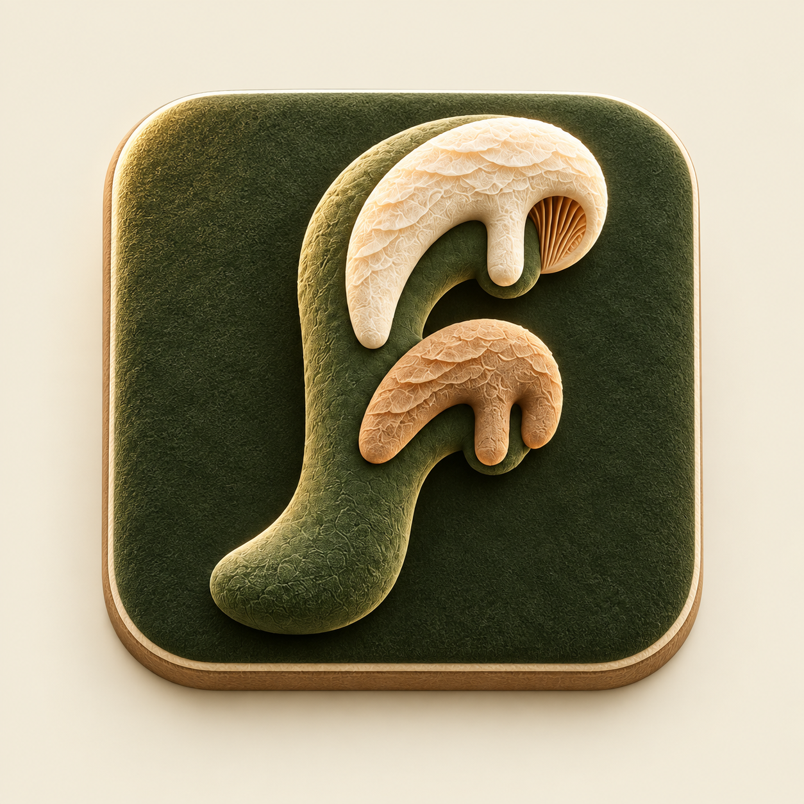
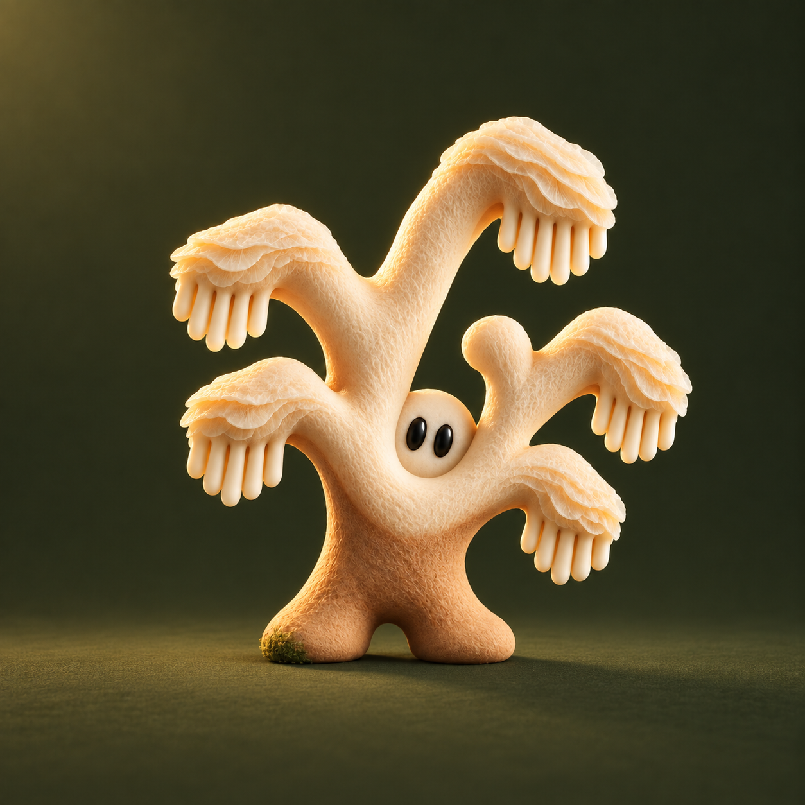

01. Fronda · lettering orgânico e lamelas

02. Fronda · ícone em camadas

03. Fronda · mascote com matéria e luz
 01. Fronda · lettering orgânico e lamelas
01. Fronda · lettering orgânico e lamelas